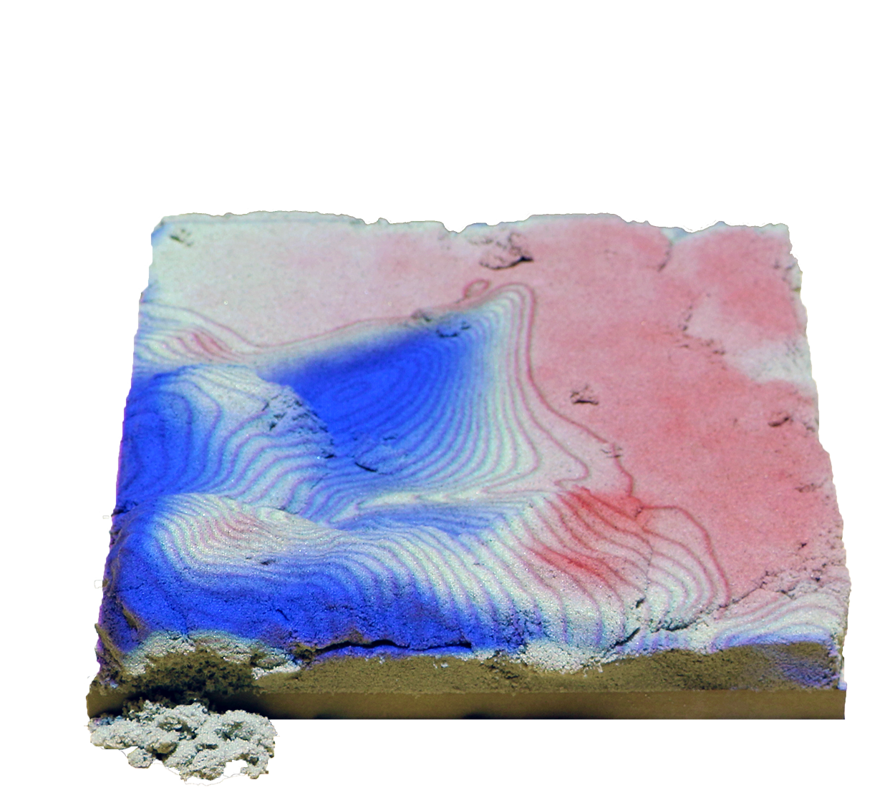
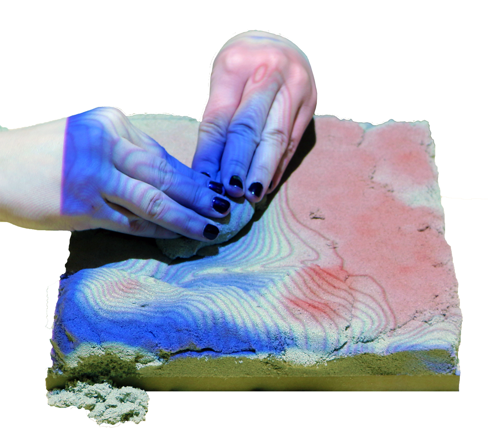
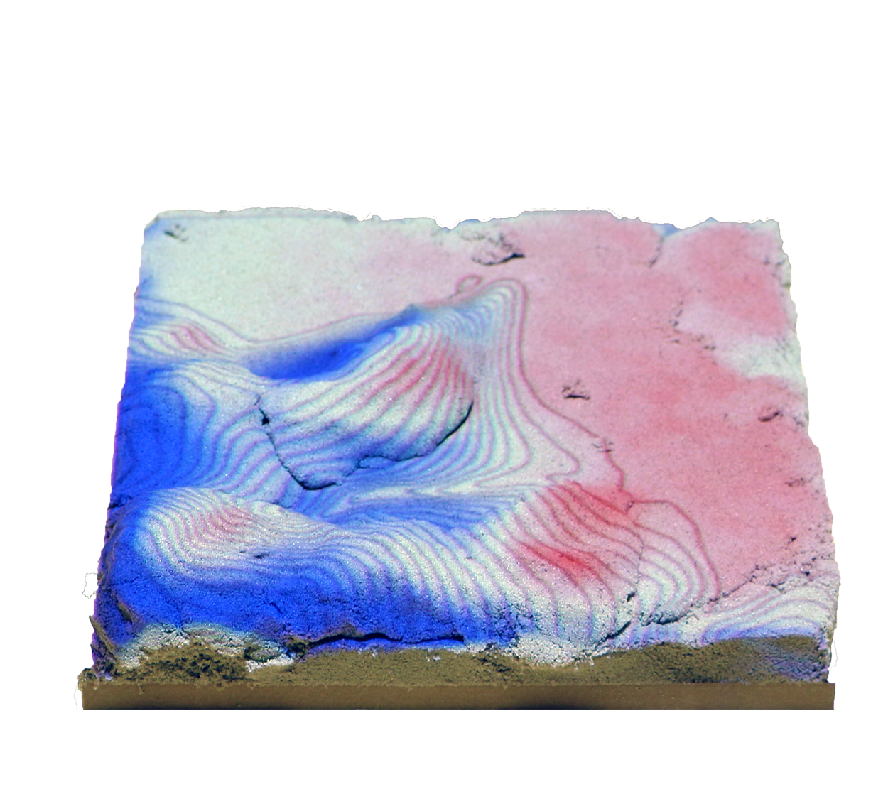
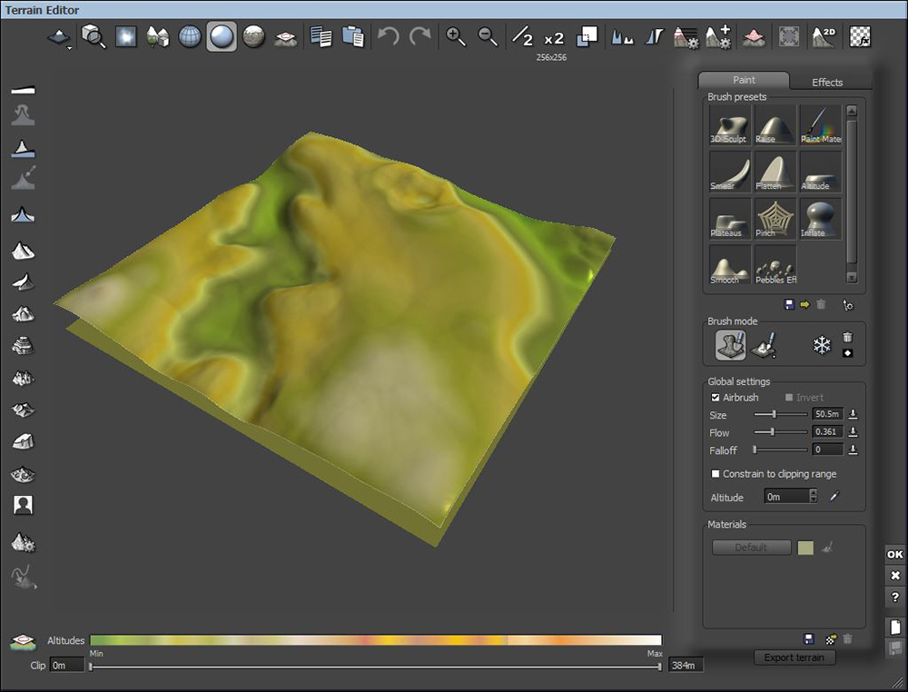
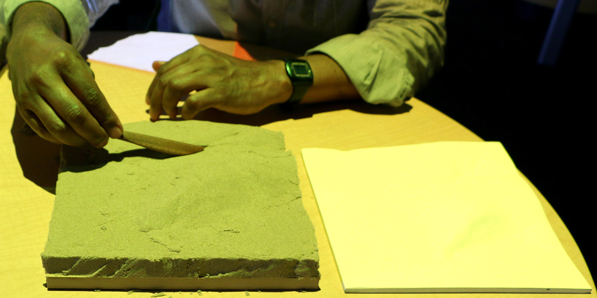
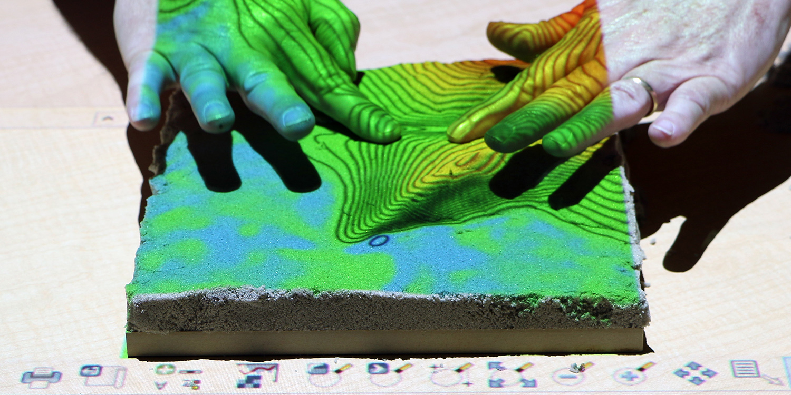
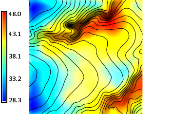
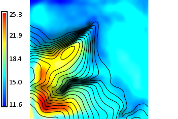
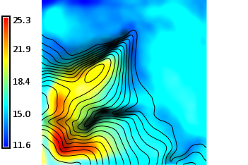
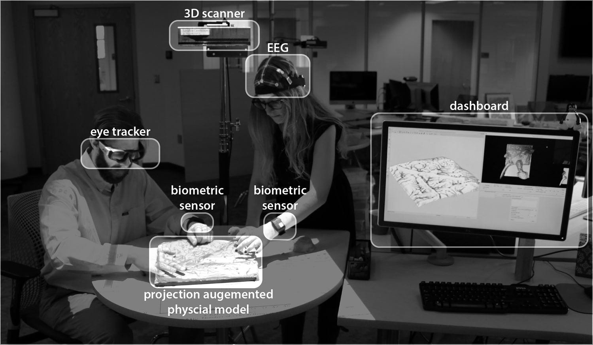

ACM Tangible Embedded Embodied Interaction 2016
Embodied Cognition with Tangible Landscape
Brendan Harmon, Anna Petrasova, Vaclav Petras, & Helena Mitasova

Tangible Landscape
A tangible user interface powered by open source GIS
History


An evolution of Illuminating Clay and the Tangible Geospatial Modeling System
Image source: MIT Media Lab
Concept


Coupling a digital and physical model of a landscape so that you can intuitively feel and shape it with your hands
Near real-time interaction
How-it-works

Tangible Landscape couples a digital and a physical model through a continuous cycle of 3D scanning, geospatial modeling, and projection
Intuitive scientific modeling with Tangible Landscape


Tangible Landscape is designed to make scientific data, models, and simulations exploratory, engaging, and fun
Scientific gaming


Termite infestation game
Structured problem solving with rules, challenging objectives, and scoring
Scientific gaming


Coastal flooding game
Embodied cognition
  Theoretically tangible interaction should offload cognitive processes through bodily action, physical simulation, and digital computation
Experiment
  A comparative study of 3D spatial performance with hand modeling, digital modeling, and tangible interaction
Experiment
 

Spatial statistics: the standard deviation of the differences of all participants using each technology
Open Science

Fork us on GitHub
Repository with experiment instructions, scripts, data, and results
Future work
Experiments using eye trackers, EEGs, and biometric sensors to study learning and creativity with Tangible Landscape
Future work
In situ digital fabrication